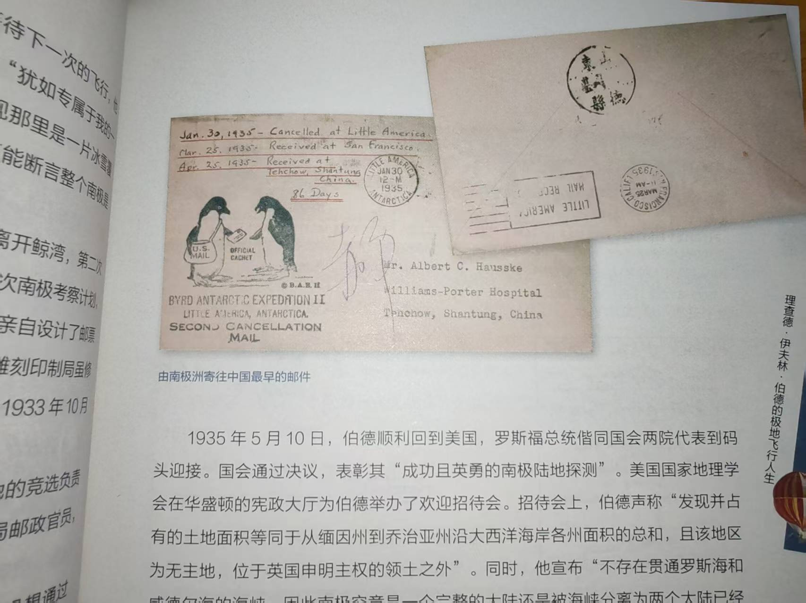
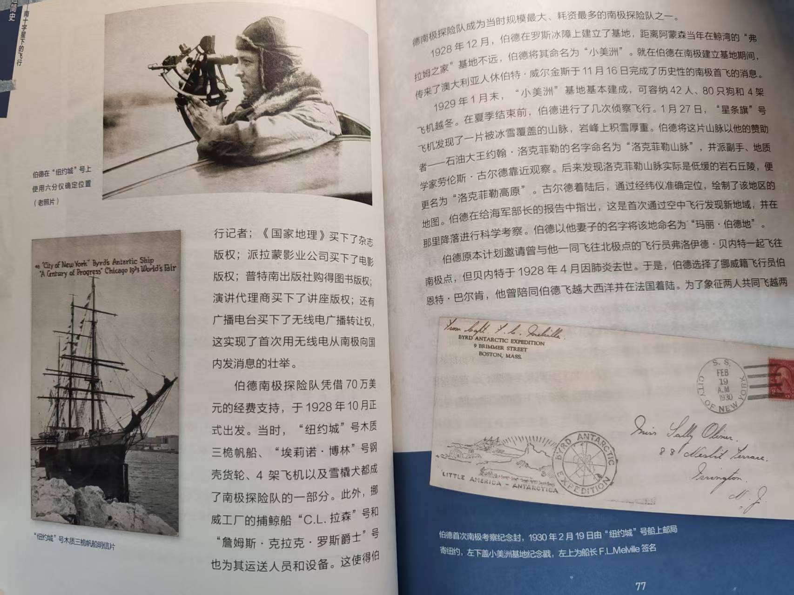
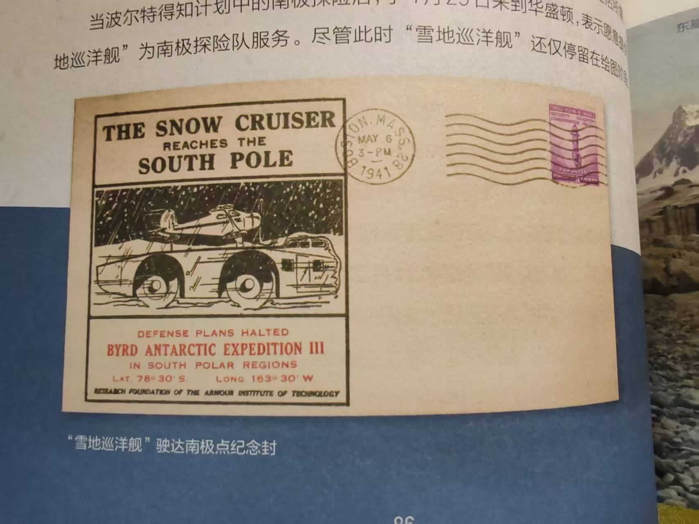

This is a delightful little book that chronicles humanity’s history of exploring Antarctica by aircraft: from the first hot air balloon rising over the Antarctic continent, the early biplanes taking off there for the first time, the first flight over the South Pole, the seaplanes of World War I crossing the Atlantic to reach Antarctica, to the modern aircraft, drones, and even the author’s own participation in Antarctic scientific research missions after World War II...
The author, Jin Lei, is an avid stamp collector. In this book, alongside meticulous research and vivid storytelling, you will find commemorative letters and stamps from the era of Antarctic exploration—for many early polar expeditions relied on postal services to send news and deliver souvenir postcards to their sponsors. You can even see the very first letter sent from Antarctica to China: dated January 30, 1935, it was mailed from Little America Base on the edge of the Ross Ice Shelf to the Hackett Medical College Hospital in Dezhou, Shandong Province, and took 84 days to arrive. It is striking to think that these legendary feats happened barely a century ago, a reminder of how rapidly the world has changed.
Here is a short, fascinating excerpt:
China’s first contact with Antarctica can be traced back to the late Qing Dynasty. Song Yaoru is recorded as the first Chinese person to set foot in Antarctica, and his story is nothing short of legendary. According to accounts, in the summer of the second year of the Guangxu reign (1876), while sailing to the United States, Song Yaoru embarked on this extraordinary journey due to his route and an unexpected accident.
At that time, the Panama Canal had not yet been built. Sailing routes from East Asia to the U.S. East Coast required a detour across the South Pacific, passing through Chilean waters, then south through the Strait of Magellan or Cape Horn into the South Atlantic, before heading north along the Argentine coast. This original route was twice as long as the canal route today and was inherently perilous. As the ship neared the Strait of Magellan, a large iceberg drifting from Antarctica struck the rudder, sending the vessel drifting out of control toward the South Pole and eventually running aground on a small island within the Antarctic Circle.
During their forced stay for repairs, Song Yaoru and the crew stepped onto this mysterious continent. All they saw was a world wrapped in white snow and ice; the polar cold bit to the bone, and penguins with black backs and white bellies covered the shores. This unexpected encounter with Antarctica became an unforgettable memory for the rest of his life. Later, Song Yaoru often told his friends and children about his Antarctic adventure. To Sun Yat-sen, who would become his son-in-law, he once said: “What impressed me most about Antarctica was the cold. If you sent a hot-headed man there, his mind would surely cool down. Antarctica is a natural freezer, the very end of cold.”
For this, Sun Yat-sen playfully dubbed Song Yaoru the “Immortal of the South Pole.”
I have always been timid since childhood, too afraid to even glance at horror movies, yet I have a deep fondness for adventure stories. Whenever I read these tales, I feel a kind of rapturous excitement, much like Lord Ye who loved dragons but feared the real thing. I often wish I had been born in 17th-century Spain, or 18th-century Holland, or even on a 19th-century sailing ship. If so, I would have been a sailor, fighting with every last ounce of strength in storms, pouring out my blood and sweat on the deck, perhaps dying on the shores of a distant land or perishing at sea—all just to catch a glimpse of an unconquered world. What a life that would have been.
In those days, the world was still young, and there were countless places left to explore. Information was scarce but precious, and it was reverence for the unknown that drove idealistic people to set out on perilous journeys. Today, in an age of information overload, search engines and AI have stripped us of our awe toward the unknown. We stay at home, content with digital junk food, or arrogantly stagnate within our own understanding, quarreling with those of different ideologies. We refuse to step outside and see for ourselves what the things we think we know truly are. And that is where our descent into mediocrity begins. May we encourage each other to do better.
Additionally, the book devotes considerable space to Richard E. Byrd’s Antarctic expeditions—the first letter sent to China also came from Little America Base, which he established on his first expedition. A leading figure in American Antarctic exploration, Byrd led multiple missions to the South Pole and was close friends with President Franklin D. Roosevelt. A large region of Antarctica, Marie Byrd Land, is named after his wife. During one expedition, he brought along a device that failed but was nonetheless fascinating:


